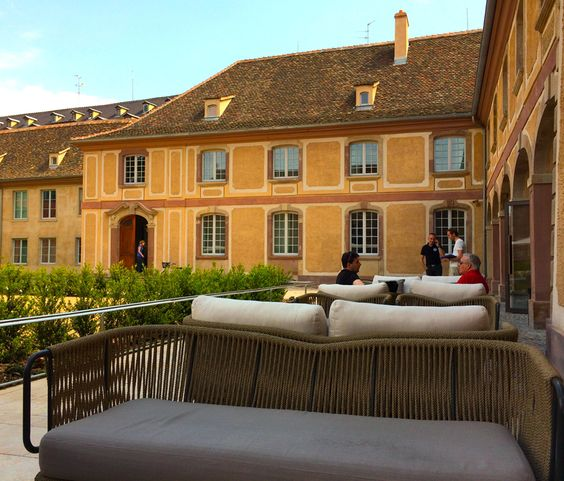
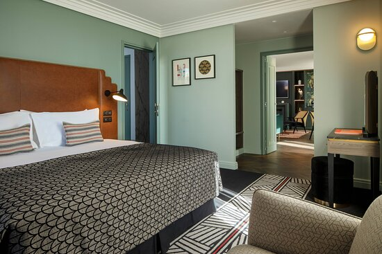
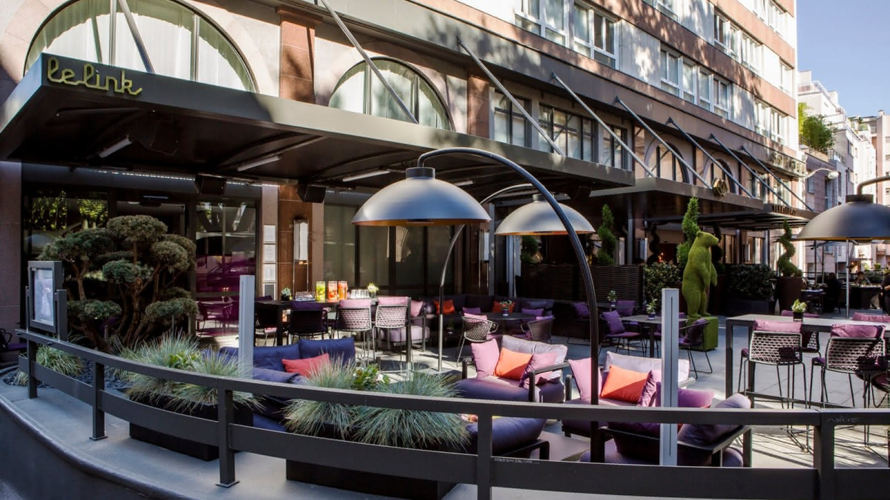
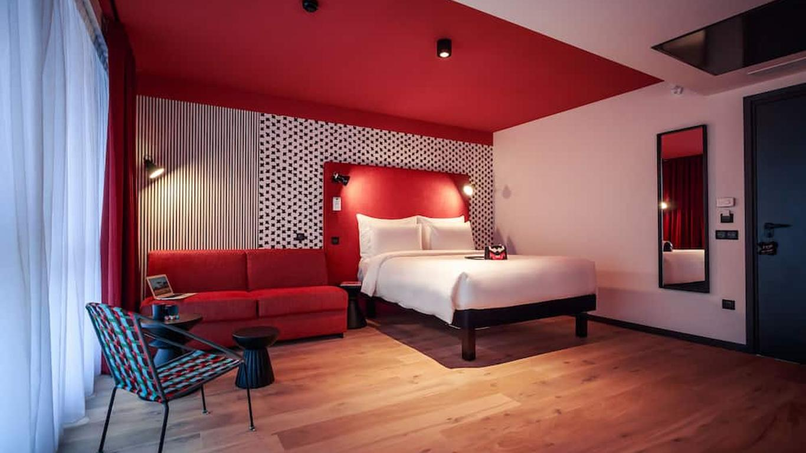

Let's Travel The World!
1.Hôtel Cour du Corbeau
The Hôtel Cour du Corbeau is a quaint little hotel set in
a tastefully renovated sixteenth-century structure. Travelers seeking a
distinctive and sophisticated experience in the city will find the hotel to be a
great option because of its cozy and historic setting. The Cathedral and other
major sights in Strasbourg are easily accessible from its central location.
Lieu : 6-8 Rue des Couples, 67000 Strasbourg, France.Le prix de l’hôtel par nuit est de 267$.L’hôtel dispose d’une gamme d’options d’hébergement, telles que des suites, des chambres doubles et des chambres simples. Selon le type de chambre, un nombre différent de lits peut être installé dans chacune. Les chambres doubles peuvent avoir deux lits séparés ou un énorme lit, tandis que les chambres simples ne disposent généralement que d’un seul lit. Afin d’accueillir plus de personnes, les suites peuvent inclure de nombreux lits.

2.Hotel Les Haras
L’hôtel dispose d’une gamme d’options d’hébergement, telles que des suites, des chambres doubles et des chambres simples. Selon le type de chambre, un nombre différent de lits peut être installé dans chacune. Les chambres doubles peuvent avoir deux lits séparés ou un énorme lit, tandis que les chambres simples ne disposent généralement que d’un seul lit. Afin d’accueillir plus de personnes, les suites peuvent inclure de nombreux lits.
L’hôtel dispose d’une variété de types de chambres, y compris des chambres de luxe, supérieures et classiques.De grands lits ou des lits doubles, des douches ou des baignoires et des salles de bains avec douche sont les caractéristiques des chambres, qui ont été créées par un duo d’architectes en tenant compte du passé du bâtiment.Le nombre maximum de berceaux et de lits supplémentaires autorisés varie en fonction de l’hébergement que vous réservez. Les clients sont priés de confirmer le nombre maximum de lits dans la chambre qu’ils ont choisie. En fonction du type de chambre, de la saison et de la disponibilité, l’hôtel Les Haras facture des tarifs différents pour différents séjours. L’hôtel facture entre 160 $ et 267 $ la nuit pour les séjours.

3.Maison Rouge Strasbourg Hotel & Spa
Le luxueux Maison Rouge Strasbourg Hotel & Spa met l’accent sur le bien-être. C’est l’endroit idéal pour les voyageurs qui veulent se détendre et explorer car il dispose d’un spa paisible, de chambres élégantes et d’un emplacement accessible. Les excellents restaurants et les services de spa de l’hôtel renforcent son attractivité.
Vous pouvez trouver Maison Rouge Strasbourg Hotel & Spa au 4 Rue des Francs-Bourgeois, Strasbourg, France.Une variété de types de chambres sont disponibles au Maison Rouge Strasbourg Hotel & Spa, y compris des suites supérieures avec lit queen, lits jumeaux supérieures, simples et doubles avec canapé-lit.Le coût d’une nuit peut varier de 198 $ à 233 $, selon le site de réservation.Il est crucial de se rappeler qu’il peut y avoir d’autres coûts. Par exemple, la ville peut facturer une taxe de séjour de 3,30 EUR par personne et par nuit, qui doit être payée à l’arrivée ou au départ.

4.Sofitel Strasbourg Grande Île
Le Sofitel Strasbourg Grande Île, l’un des hôtels les plus luxueux de Strasbourg, offre un séjour somptueux en plein centre de la ville. Avec son bar élégant, sa cuisine étoilée au guide Michelin et ses équipements contemporains, c’est une excellente option pour les touristes à la recherche d’un hébergement opulent et d’un service de premier ordre. Le fait d’être dans le centre de la ville le rend très pratique à explorer.
Lieu : Le Sofitel Strasbourg Grande Île est situé au 4 Place Saint-Pierre Le Jeune, Strasbourg, France.Au Sofitel Strasbourg Grande Île, une chambre basique coûte entre 194 $ et 286 $ US par nuit, tandis qu’une suite coûte entre 250 $ et 311 $ US par nuit. L’hôtel offre une annulation gratuite et des prix entièrement remboursables.Les hôtels de Strasbourg, en France, indiquent que ni berceaux ni lits supplémentaires ne sont proposés dans leurs chambres. L’hôtel propose cependant une gamme de catégories de chambres, telles que des chambres classiques avec un lit queen.

5.BOMA Hotel
L’hôtel BOMA à Strasbourg vous propose un séjour branché et moderne. Il accueille des clients contemporains avec ses manières élégantes et ses chambres confortables. L’hôtel est une option fantastique pour tous ceux qui souhaitent profiter de la vie nocturne et de la culture de la ville, car il dispose également d’un bar chic et d’une ambiance animée.
Lieu: L’hôtel BOMA est situé au 7 Rue du 22 Novembre, Strasbourg, France.Les différents types d’hébergement, tels que les chambres doubles ou lits jumeaux traditionnels avec un lit queenSur la base des tarifs moyens, une chambre à l’hôtel BOMA easy living à Strasbourg coûte entre 106 $ et 143 $ US par nuit.
